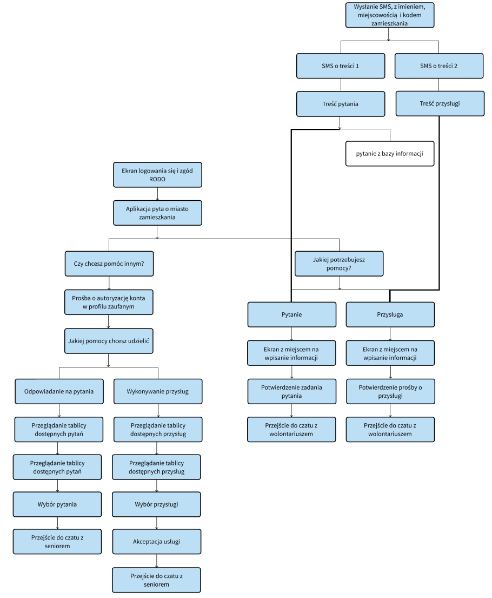

Overview
I ‘ve participated in a social hackathon and workshops "Sensorycznie i na serio" an event dedicated to the issue of people with sensory disabilities in the city. The event was held online on the ZOOM platform on September 12-13, 2020. After the first half of the day filled with lectures about different aspects of poeple with sensory disabilities’s life, I was assigned to a group of three, with whom we were to create a product, solving any of the presented problems. The form of the hackathon assumed dealing with the problem in a small period of time and using the guidance of mentors.
Approach
Mrs. Dorota Orzeszek in her lecture “How seniors work, i.e. information architecture for the elderly” inspired our group with the term “turbo senior”. We’ve decided to get interested in the group of elderly people, which deal with sensory disabilities and many more difficulties.
Design Process
To deliver the application that responds to the need of the users and at the same time to provide delightful user experience certain process is required. Due to the form of the hackathon we didn’t have enought time for the perfect UX process. To do better research, I would like to meet with target group, talk with them. Also the persons could be better with the data from questionnairies. We could consult ideas with targer group, and test the mockups.Research
The latest list of the Central Statistical Office, which published data on the number of retirees in Poland (until 2017):According to the Central Statistical Office, the number of retirees (over 60 years old) is growing year by year and in the last measurement period it amounted to almost 6.5 million people. From the document “The situation of elderly people in Poland in 2018” from stat.gov.pl we’ve found out a lot of information. Elderly people are more and more active in cultural, educational and social life, they use more and more technology. But still there is large group of seniors who don’t have an access to computer, smatphone and can’t use any of this devices. “Seniors and socially excluded people cannot always take advantages of the full services in their area and cope with everyday activities.”
Persons
That is why we’ve made four personas: Janina- regular senior, she has really old phone and doesn’t have computer in her house,Dorota- “turbo senior”, she loves app on smartphone,
Anna-who would like to help elderly people and
Robert- who could use the app in immoral way. We considered the figure of Robert to pay special attention to safety.
POMOCNIK
Twój wolontariusz w zasięgu rękiuse of the sms function as part of the application

application as an extension of the SMS service
Flow of Janina (regular senior)
Flow of Dorota (“turbo senior”)
Flow of Anna (the volunteer)
Information Architecture
This is the most important diagram which shows the structure of the whole system and how the SMS-system and app system connects. 
Flow of the senior (prototypes)
the app is simple: two colours, large font size, large buttons- will not be a problem for seniors
asking a question or asking for a favour is simple! Then if your question is in data base or in Google you can have your answer immediately! If not the volunteers will be happy to help!
if you need a favour it is easy! Just ask!
Flow of the volunteer (prototypes)
When you want to help, the difference is you need to have a Trusted Profile, you can register one (if you have ID and bank account you can do it online) or log inIt is for safety!
you can answer the question first form people from your region (the same post code)
if you can do some favour for other poeple in addition to their gratitude, you can earn points closer to school scholarship or discounts!
FUTURE
We assume very serious marketing, finding funds from the European Union, universities of the third century, foundations to make posters informing and encouraging to use the Pomocnik. We thought about the posters in the ommunity centers, pharmacies, clinics, Post Offices, hospitals and offices, corporations (where the children of the elderly people could see it). We would like to improve the proposed service system, expand it with other devices, such as a bench, which is a visually tamed element in urban space and could help deaf people, or an installation for a visually impaired person. The application with the SMS system has the potential to become a tool available to all people with any type of sensory exclusion.